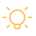

탄소발자국
탄소발자국의 정의
탄소발자국은 환경성적표지 환겨영향 범주 중 하나로 제품및 서비스의 원료채취, 생산, 수송·유통 사용 폐기 등 전 과정에서 발생하는탄소(온실가스)가 기후변화에 미치는영향을 계량적으로 나타낸 지표이며 라벨형태로 제품에 표시됩니다.
*환경성적표지 제도란제품 및 서비스의 환경성 제고를 위해 제품 및 서비스의 원료채취, 생산, 수송·유통, 사용, 폐기 등 전과정에 대한 환경영향을 계량적으로 표시하는 제도입니다. 환경성적표지의 환경영향 범주에는 탄소발자국 외에도 자원발자국, 오존층영향, 산성비 부영양화, 광화학스모그, 물발자국, 생태독성, 인체독성, 생물 다양성 영향이 있습니다.
목적
소비자에게 제품의 온실가스 배출량 정보를 정확하고 투명하게 공개하여 환경영향이 적은 제품을 구매하도록 유도하여 기후변화 대응 및 지속가능한 소비 · 생산체계를 구축하는데 그목적이 있습니다.
특징
탄소발자국은 1단계 탄소발자국 인증, 2단계 저탄소제품 인증으로 구성되어 있습니다.
탄소발자국 인증
제품 및 서비스의 생산부터 폐기까지의 과정에서 발생되는 온실가스 배출량을 산정한 제품임을 정부가 인증
저탄소제품 인증
동종제품의 평균 탄소 배출량 이하(탄소발자국 기준)이면서 저탄소 기술을 적용하여 온실가스 배출량을 4.24%(탄소감축률 기준)감축한 제품을 대상으로 정부가 인증
※ 저탄소제품 인증을 위해서는 ‘탄소발자국 기준’과’탄소감축률 기준’을 모두 만족해야 하나,2020년 12월 31일 까지는 두 기준 충 하나만 만족하더라도 인증이 가능
탄소발자국 인증제품 현황
탄소발자국 인증을 받은 제품 현황은 환경성적표지 홈페이지 (www.epd.or.kr)에서 조회할 수 있습니다. 인증제품 현황